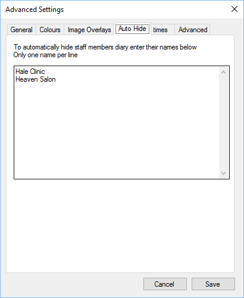

You can automatically hide staff from being shown in the Staff selection of the diary.

Add the staff members name to the list. Only one name per line can be shown.
This option can be used if you have a “dummy” staff member setup for appointments, but you do
not want them to be shown in the list.
For example, if you have a clinic which is used by other staff members for appointments, on
different days, but wish to hide it, add the name to the list.